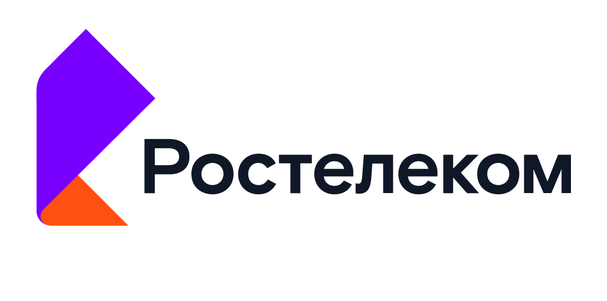

О компании Ростелеком
Общая информация
Ростелеком — крупнейший в России интегрированный провайдер цифровых услуг и решений,
который присутствует во всех сегментах рынка и обслуживает миллионы домохозяйств, государственных
и частных организаций.
Компания занимает лидирующие позиции на рынке услуг высокоскоростного доступа в интернет
(первое место с 13 млн клиентов, подключенных по оптическим линиям), мобильной связи
(входит в топ-3 мобильных операторов страны с 49 млн абонентов) и платного телевидения
(первое место с 11,7 млн домохозяйств). Совместно с партнерами «Ростелеком» развивает
онлайн-кинотеатр Wink, который занимает второе место среди крупнейших видеосервисов
России по количеству платящих подписчиков.
Компания выступает ключевым технологическим партнером в реализации приоритетного
национального проекта «Экономика данных и цифровая трансформация государства»,
занимаясь разработкой цифровых государственных сервисов, развитием и эксплуатацией
важнейших государственных информационных систем и платформ.
«Ростелеком» — признанный лидер в таких областях, как кибербезопасность, дата-центры
и облачные сервисы, а также цифровизация регионов, промышленности, АПК, здравоохранения,
образования и других направлений. Компания последовательно работает над обеспечением
технологического суверенитета, развивает собственное производство телеком-оборудования
и разработку ПО, которые включены в отечественные реестры. Более 60 коммерческих
ИТ-решений компании лидируют в своих рыночных сегментах.
Год основания: 1993
Основные направления деятельности компании «Ростелеком»
Помимо предоставления широкополосного доступа (ШПД) в интернет, услуг мобильной связи,
телефонии и подключения интерактивного ТВ, «Ростелеком» разрабатывает цифровые решения
в сфере кибербезопасности, продукты для развития городской инфраструктуры, электронного
правительства, «умного» дома и систем видеонаблюдения. Также компания работает над
инновациями в таких отраслях, как образование, медицина и биометрия.
-
1. Интернет
Компания предоставляет широкополосный доступ в интернет по волоконно-оптическим линиям связи и занимает лидирующее положение в этом секторе страны. -
2. Связь
«Ростелеком» — крупнейший оператор фиксированной телефонной связи России, который обслуживает две трети рынка. Помимо местной телефонной, компания предоставляет услуги сотовой связи и входит в число крупнейших мобильных операторов страны. -
3. Телевидение
Компания подключает дома россиян к интерактивному телевидению и развивает видеосервис Wink.ru — второй среди онлайн-кинотеатров страны по количеству платных подписчиков. -
4. Видеонаблюдение
«Ростелеком» предоставляет услугу облачного видеонаблюдения, которая предполагает установку в доме видеокамеры и подключение ее к интернету с защищенным хранением видео в облаке компании. -
5. Цифровые сервисы
Компания разрабатывает собственное программное обеспечение и создает цифровые продукты, повышающие качество жизни ее клиентов. В их числе сервисы для «умного» дома, игровые платформы и роутеры, программы для развития и образования детей. -
6. Центры обработки данных
«Ростелеком» обслуживает геораспределенную сеть дата-центров и предлагает компаниям разместить на собственной облачной платформе информационные системы, приложения и сайты.
История создания провайдера цифровых услуг «Ростелеком»
Акционерное общество «Ростелеком» было зарегистрировано 23 сентября 1993 года. Его создали на базе
одноименного государственного предприятия связи, учрежденного Госкомимущества России. В его состав
вошли 20 госучреждений междугородной и международной связи, а также оборудование «Интертелекома».
В первые годы с момента своего основания «Ростелеком» замкнул кольцо глобальной цифровой линии связи,
которая проходит через три континента (Северная Америка, Австралия, Евразия) и три океана
(Атлантический, Индийский, Тихий). В 2004 году компания подписала соглашение с China Telecom о
строительстве кабельной системы связи между Россией и Китаем, а в 2008 году ввела в эксплуатацию
подводную кабельную систему RJCN между Россией и Японией.
4 декабря 2009 года «Ростелеком» запустил сайт «Госуслуги». На сегодняшний день компания считается
крупнейшим провайдером России и входит в тройку сведущих мобильных операторов страны,
число абонентов которого превышает 48 млн человек. В октябре 2024 года председателем совета
директоров «Ростелекома» стал Дмитрий Медведев.
Что нужно запомнить о компании «Ростелеком»
Подведем итоги материала и перечислим главные факты о перспективах деятельности и стоимости акций компании «Ростелеком».

- Акционерное общество «Ростелеком» было создано в 1993 году на базе одноименного государственного предприятия связи, учрежденного Госкомимущества России.
- На сегодняшний день ПАО «Ростелеком» — крупнейший на российском рынке провайдер цифровых услуг и решений, также компания входит в тройку сильнейших мобильных операторов страны.
- По итогам 2023 года компания отчиталась о выручке в размере 707,8 млрд рублей, что на 13% превышает показатель 2022 года. Чистая прибыль при этом достигла 42,3 млрд рублей, за год она выросла на 20%.
- За первое полугодие 2024 года выручка компании превысила 201,9 млрд рублей, что на 9% превышает показатель аналогичного периода 2023 года. Чистая прибыль составила 28,6 млрд рублей. По итогам первого полугодия 2023 года она равнялась 17,7 млрд рублей.
- Высокая ключевая ставка Центробанка негативно сказывается на росте бизнеса компании. Еще одним отрицательным фактором эксперты называют потенциальное сокращение спроса на ряд услуг из-за спада в экономике.
- В будущем на рост стоимости акций «Ростелекома» может повлиять IPO некоторых «дочек» компании, о чем неоднократно заявлял сам провайдер. Но эксперты считают, что это случится нескоро, учитывая уровень ставок и пессимизм на рынке акций.
- Дешевый телеком и быстрорастущие цифровые сервисы делают акции компании перспективными. Но с учетом рыночной конъюнктуры и непростой ситуации в экономике быстрого роста котировок ждать не стоит.